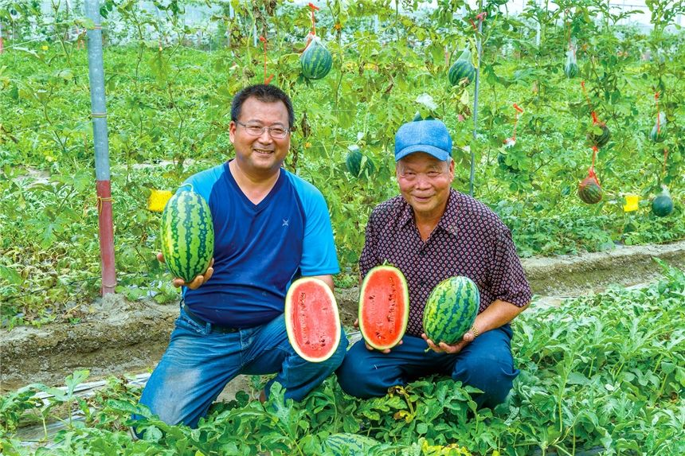

雲林縣台西鄉
汯蒝有機農場 有機西瓜
汯蒝有機農場是第二個獲得有機認證的農場，也是種植有機西瓜的先行者， 以四季輪作來保持土壤有機質的平衡；其中西瓜田有4分多地，年產量約1.2萬台斤， 因應都會小家庭需求，又以形如迷你冬瓜、個頭小巧的「甜美人」西瓜為大宗。
嘉義縣六腳鄉
亞太農場 紅鬚玉米筍
紅鬚玉米筍的料理方式很多，除了剝殼炒，她建議可連同外殼一起汆燙或用烤箱烤， 熟了之後再剝掉外殼沾鹽或沙拉醬吃；或者用電鍋蒸煮後連同最裡層的嫩殼一起食用， 都能享用到玉米筍的鮮甜多汁！此外，以玉米鬚做成茶包煮茶，茶湯清爽甘甜。
IN every Season
心動了嗎?
加入會員掌握最新資訊